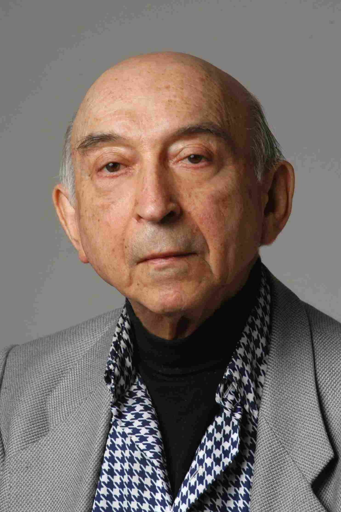
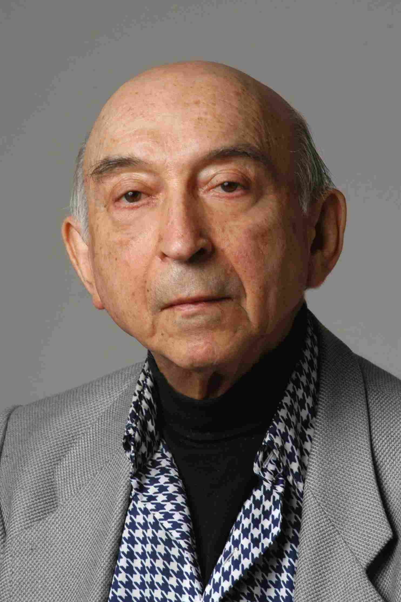

个人简介
周晓君，中南大学教授，博士生、硕士生导师。2009年本科毕业于中南大学自动化专业，同年推荐免试中南大学控制科学与工程专业直博生，2011年获得国家公派奖学金前往澳大利亚联邦大学攻读博士学位，于2014年获得应用数学专业博士学位，同年加入中南大学信息科学与工程学院工作，于2016年度破格晋升副教授。研究方向包括：复杂工业过程建模与优化控制、智能优化方法及其应用、机器学习与图像处理、多属性决策理论与方法、 对偶理论与全局优化等，目前已发表高水平学术论文50余篇，包括SCI期刊论文30余篇，主持国家自然科学基金2项，包括青年基金1项和面上项目1项，军工项目1项，主持湖南省自然科学基金青年基金和优秀青年基金各1项，参与国家自然科学基金重大项目1项，重点项目1项等。现担任《中南大学学报(自然科学版)》等期刊编委工作。
| 邮箱： | michael.x.zhou@csu.edu.cn |
| 电话： | +86-13787052648 |
| 地址： | 中南大学校本部民主楼316 |
| ORCID: | https://orcid.org/0000-0002-6367-696X |
| ResearchGate: | https://www.researchgate.net/profile/Xiaojun_Zhou |
| Publons Profile | https://publons.com/researcher/3896453/xiaojun-zhou/ |
| Google Scholar: | https://scholar.google.com.hk/citations?user=ICkJryYAAAAJ&hl=zh-CN&oi=sra |
| IEEE Member ID: | 93462634 |
| CAA Member ID: | E1408801915M |
| 招生名额： | 2-3名硕士生，1个博士生（课题组） |
| 招生专业： | 控制科学与工程学科 |
招生要求：下面五个人物，若认识三个以上的可以联系我。
 



状态转移算法简介：
状态转移算法是一种智能型随机性全局优化算法，它的基本思路是将最优化问题的一个解看成是一个状态，解的迭代更新过程看成是状态转移过程，利用现代控制理论中的离散时间状态空间表达式来作为产生候选解的统一框架，基于此框架来设计状态变换算子。与大多数基于种群的进化算法不同，标准的状态转移算法是一种基于个体的进化算法，它基于给定当前解，通过采样方式，多次独立运行某种状态变换算子产生候选解集，并与当前解进行比较，迭代更新当前解，直到满足某种终止条件。值得一提的是，状态转移算法中的每种状态变换算子都能够产生具有规则形状、可控大小的几何邻域，它设计了包括旋转变换、平移变换、伸缩变换、坐标轴搜索等不同的状态变换算子以满足全局搜索、局部搜索以及启发式搜索等功能需要，并且以交替轮换的方式适时地使用各种不同算子，使得状态转移算法能够在概率意义上很快找到全局最优解。
对偶理论，又称太极阴阳论，全文如下：
起初，世间无物，只有太极，太极者，虚实同体。太极生阴阳，阴阳者，对立统一，阴中有阳，阳中有阴。山为阳，水为阴；日为阳，月为阴；男为阳，女为阴；白天为阳，夜晚为阴：世界万物莫不成对显现。山为阳，亦带阴气；水为阴，亦有阳刚；日出为阳，日落为阴；月满为阳，月亏为阴；为上级，男为阳；处下属，男为阴；少女为阴，为母则阳；白天为阳，遇雨则阴，夜晚为阴，星月现阳：皆乃阴阳交替之象。山中有花草，花为阳，草为阴；水中有鱼藻，鱼为阳，藻为阴；尚在人世，精神为阳，肉体为阴；死后入土，灵为阳，魂为阴；一天有晴雨，晴为阳，雨为阴，一年有四季，春夏为阳，秋冬为阴：故曰阴阳层次分明。
天地之间，唯有一物，无所不包，无所不及，名曰太极，或称阴阳。人自阴阳结合生，故有两性，或善或恶，或美或丑，或好或坏；死后亦归阴阳，或褒或贬，或颂或毁，或从或弃。昨日之为善，今日之作恶，皆为同一体。自我居魔鬼上帝，乃太极化身，本属阴阳，魔鬼是阴，上帝是阳。阴阳协调，乃相安无事；阴阳不调，乱象乃生，故有烦恼，有疾病，有死亡。魔鬼有时自诩上帝，上帝亦擅魔鬼之事，故人常迷失自我。
阴阳定事物走势，阴盛阳衰，死气沉沉；阳盛阴衰，火烧燎原；阴阳协调，朝气蓬勃，乃事物发展之道。事有不顺，需补阳气，转危为安；泄气忧愁，乃助阴生；事有过顺，阳不独占，阴亦暗藏且待出。人生天地间，阴阳定归途，自我是阳，外界是阴；自我之中，上帝是阳，魔鬼是阴；外界之中，贵人是阳，小人是阴；阴阳层现，变化万千，需着力协调，滋阴补阳，行天地之道。
宗教学说，旁门左道，信之则有，不信则无。太极阴阳则不然，信也有之，不信亦有，从古至今，永恒存在。不同层次，不同形式，相互转化，大千世界，莫不如是。
课题组成员获奖情况：
| 黄兆可： | 2019年宝钢优秀学生奖 |
| 韩洁： | 2017年博士研究生国家奖学金 |
| 张凤雪： | 2016年硕士研究生国家奖学金、2018年博士研究生国家奖学金 |
| 黄淼: | 2018年硕士研究生国家奖学金、2019届湖南省优秀毕业生、 |
| 周佳佳: | 2018年硕士研究生国家奖学金、2019届中南大学优秀毕业生 |
| 杨珂： | 2019年硕士研究生国家奖学金、2020届中南大学优秀毕业生 |
| 龙建朋: | 2019年华为奖学金(硕士研究生奖学金) |
| 王湘月: | 2021届中南大学优秀毕业生 |
教育经历
[1] 2011.11-2014.11
澳大利亚联邦大学 | 应用数学 | 博士学位 | 博士研究生毕业
[2] 2009.10-2011.11
中南大学 | 控制科学与工程 博士研究生肄业
[3] 2005.9-2009.6
中南大学 | 自动化 | 学士学位 | 大学本科毕业
研究方向
[1] 复杂工业建模与优化控制
[2] 智能优化方法及其应用
[3] 机器学习与图像处理
[4] 多属性决策理论与方法
[5] 对偶理论与全局优化
其他联系方式
[1] 邮编： 410083
[2] 通讯/办公地址： 湖南省长沙市岳麓区中南大学校本部民主楼316
[3] 移动电话： 13787052648
[4] 邮箱： michael.x.zhou@csu.edu.cn
团队成员
团队名称：智能控制与优化决策
团队介绍：致力于不确定优化、可解释机器学习和模糊多属性决策等方法的基础理论研究，同时从事流程工业智能优化制造、能源互联网、智能交通等领域的应用研究。
| 方双 | |
|
2021级博士研究生，主要从事智能多目标优化与决策方法、流程工业智能优化制造等方面研究工作。 |

| 杜洋伊 | |
|
2021级硕士研究生，主要从事神经架构搜索、强化学习、无人机路径规划等方面研究工作。 |

| 胡佳铭 | |
|
2021级硕士研究生，主要从事不确定优化、能源互联网等方面研究工作。 |

| 谭琬 | |
|
2021级硕士研究生，主要从事模糊多属性决策、能源互联网等方面研究工作。 |

| 王正 | |
|
2021级硕士研究生，主要从事可解释机器学习、能源互联网等方面研究工作。 |

| 李明 | |
|
2020级硕士研究生，主要从事特征工程、图像处理、流程工业智能监控等方面研究工作。 |

| 孙燕 | |
|
2020级硕士研究生，主要从事多属性决策、多目标优化、流程工业智能优化决策等方面研究, 目前已发表的学术论文有： [1] Yan Sun, Xiaojun ZHOU, etc. Optimal PID controller design for AVR system based on multi-objective optimization and multi-attribute decision making[C]. 2021, 中国控制与决策会议，accepted. |

| 田寄托 | |
|
2020级硕士研究生，主要从事双层优化、机器学习、供应链优化等方面的研究，目前已经发表的学术论文有： [1] Zeyu Wang, Xiaojun Zhou, Jituo Tian, Tingwen Huang. Hierarchical parameter optimization based support vector regression for power load forecasting [J]. Sustainable Cities and Society , accepted. [2] Xiaojun Zhou, Jituo Tian, etc. A fast constrained state transition algorithm[J]. Neurocomputing, 2021, 455, 202-214.
|

| 林飞凡 | |
|
2020级硕士研究生，主要从事模糊优化、机会约束、流程工业智能优化控制等方面的研究。 |

| 王泽宇 | |
|
2020级硕士研究生，主要从事时间序列预测、智能交通方面的研究，目前已经发表的学术论文有： [1] Zeyu Wang, Xiaojun Zhou, Jituo Tian, Tingwen Huang. Hierarchical parameter optimization based support vector regression for power load forecasting [J]. Sustainable Cities and Society , accepted.
|

| 高媛 | |
|
19级硕士研究生，主要从事多任务学习、多目标优化、流程工业智能优化决策等方面的研究，目前已发表的学术论文有： [1] 周晓君， 高媛等. 基于多目标优化多任务学习的端到端车牌识别方法[J]. 控制理论与应用，已录用 [2] Xiaojun Zhou , Yuan Gao, etc. A multiple gradient descent design for multi-task learning on edge computing: multi-objective machine learning approach[J]. IEEE Transactions on Network Science and Engineering, accepted. |

| 耿传玉 | |
|
19级硕士生, 主要从事医学图像处理、机器学习等方面的研究. |

| 贺婧怡 | |
|
19级硕士生，主要从事集成学习、多属性决策、流程工业智能优化决策等方面的研究，目前已发表的学术论文有： [1] Jingyi He，Xiaojun Zhou, etc. An ensemble learning framework based on group decision making[C]. 2020, 中国控制与决策会议，accepted. [2] Xiaojun Zhou, Jingyi He, etc. An ensemble learning method based on deep neural network and group decision making[J]. Knowledge-Based Systems, accepted.
|

| 张云祥 | |
|
18级硕士生（已硕士毕业），主要从事数据驱动优化、贝叶斯学习、RNN等方面的研究, 目前已发表的学术论文有： [1] 张云祥，周晓君等. Data-driven based state transition algorithm for dynamic optimization [C]. 2019 IEEE Symposium Series on Computational Intelligence (SSCI), 2019, pp. 1091--1096. |

| 王湘月 | |
|
18级硕士生（已硕士毕业），主要从事不确定优化、机会约束优化、流程工业智能优化控制等方面的研究，目前已发表的学术论文有： [1] 王湘月，周晓君等. 不确定条件下的湿法炼锌除铜过程机会约束优化控制[J]. 化工学报, 2020, 71: 1226--1233. [2] 周晓君，王湘月等. Hybrid Intelligence Assisted Sample Average Approximation Method for Chance Constrained Dynamic Optimization[J]. IEEE Transactions on Industrial Informatics, DOI: 10.1109/TII.2020.3006514 |

| 徐冲冲 | |
|
19级博士生，主要从事时间序列分析、分布式优化、约束优化算法等方面的研究，目前已经发表的学术论文有： [1] C Xu, G Chen, X Zhou. Temporal pattern attention-based sequence to sequence model for multistep individual load forecasting[C]. IECON 2020 The 46th Annual Conference of the IEEE Industrial Electronics Society, accepted. |

| 王启安 | |
|
17级硕士生（已硕士毕业）, 主要从事图像处理、机器学习、特征选择等方面的研究, 目前已发表的学术论文有： [2] 周晓君，王启安等，A hybrid feature selection method for production condition recognition in froth flotation with noisy labels[J]. Minerals Engineering, 2020, https://doi.org/10.1016/j.mineng.2020.106201 |

| 龙建朋 | |
|
17级硕士生（已硕士毕业）, 主要从事智能优化、约束优化、数据驱动优化等方面的研究，目前已发表的学术论文有： |

| 杨珂 | |
|
17级硕士生（已硕士毕业）, 主要从事社区发现、聚类分析、机器学习等方面的研究，目前已发表的学术论文有： |

| 张润东 | |
|
17级硕士生（已硕士毕业）, 主要从事模糊聚类、模糊决策等方面的研究，目前已发表的学术论文有： [1] 周晓君，张润东等，Kernel intuitionistic fuzzy c-means and state transition algorithm for clustering problem[J]. Soft Computing, 2020，https://link.springer.com/article/10.1007/s00500-020-04879-8 [1] 周晓君，张润东等, Using hybrid normalization technique and state transition algorithm to VIKOR method for influence maximization problem[J]. Neurocomputing, 2020, 410:41-50. |

| 周佳佳 | |
|
16级硕士生（已硕士毕业）, 主要从事多目标优化、智能优化算法等方面的研究, 目前已发表的学术论文有： |

| 黄淼 | |
|
16级硕士生（已硕士毕业）, 主要从事动态优化、机器学习等方面的研究,目前已发表的学术论文有： |

| 张凤雪 | |
|
17级博士生, 主要从事分数阶PID控制、深度学习等方面的研究, 目前已发表的学术论文有： |

| 韩洁 | |
|
个人主页：http://faculty.csu.edu.cn/jie_HAN/zh_CN/index/160667/list/index.htm 16级博士生（已博士毕业）, 主要从事不确定优化、动态多目标优化、图像处理等方面的研究，目前已发表的学术论文有： [1] 韩洁, 董天雪, 周晓君*, 阳春华, 桂卫华. State transition algorithm for constrained optimization problems[C]. in
the 33rd Chinese Control Conference (CCC), 2014, pp. 7543-7548. [6] 韩洁, 阳春华, CC Lim, 周晓君等. Power scheduling optimization under single-valued neutrosophic uncertainty[J]. Neurocomputing, 2020, 382: 12--20 [7] 韩洁, 阳春华, CC Lim, 周晓君等. Stackelberg-Nash game approach for constrained robust optimization with fuzzy variables[J]. IEEE Transactions on Fuzzy Systems, DOI: 10.1109/TFUZZ.2020.3025697 |

| 黄兆可 | |
|
15级博士生（已博士毕业）, 主要从事不平衡数据处理、双层规划、数据挖掘等方面的研究, 目前已发表的学术论文有： [5] 黄兆可，阳春华，陈晓方，周晓君等. Functional deep echo state network improved by a bi-level optimization approach for multivariate time series classification[J]. Applied Soft Computing, accepted. |